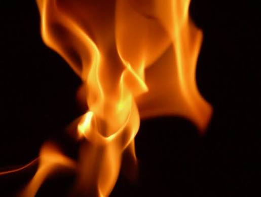

The fire burns behind the prisoners, casting the shadows they mistake for reality. It's a source of light, but also an artificial, limited one. The fire represents the flawed or partial sources of knowledge that produce only shadows of the truth, not truth itself.
Back to map